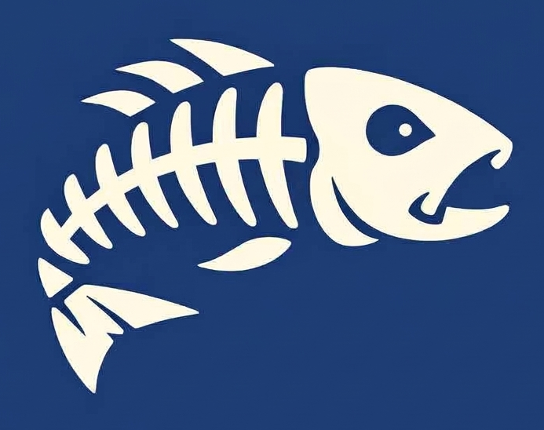

낚시와바다 by MareCarlo 앱 열기나만의 바다낚시 기록 앱
즐겨찾는 포인트마다 출조 이력·메모·사진을 쌓고,
조과를 어종별로 기록해 내 낚시를 데이터로 남깁니다.
핵심 기능
단순한 날씨 앱이 아닙니다. 포인트별 이력과 조과 데이터를 쌓아 나만의 낚시 데이터베이스를 만듭니다.
포인트 관리
즐겨찾는 낚시터를 등록하고 포인트별 메모·사진 갤러리를 직접 채워갑니다. 나만의 포인트 노트가 완성됩니다.
출조 & 조과 기록
출조 날짜·어종·크기·채비를 기록합니다. 사진을 첨부하면 포인트별 조과 이력이 자동으로 쌓입니다.
MY 최고 기록
어종별 최대 사이즈·최고 무게를 자동으로 집계합니다. 내 최고 기록을 한눈에 확인하세요.
물때·날씨 예보
조석·파고·풍속을 인터랙티브 그래프로 확인. 포인트별 출조 가능 여부를 색상으로 즉시 판단합니다.
포인트 갤러리
포인트마다 사진을 올려 나만의 갤러리를 꾸밉니다. 출조 때마다 쌓이는 현장 사진 아카이브입니다.
안전 지키미
출조 중 내 위치를 가족에게 30분마다 자동 발송. 혼자 가는 갯바위도 안심하고 즐깁니다.
사용 방법
별도 설치 없이 웹 브라우저에서 바로 사용하는 PWA 앱입니다.
포인트 등록 & 메모
자주 가는 낚시터를 즐겨찾기에 추가합니다. 포인트마다 나만 아는 공략법을 메모하고 사진 갤러리를 채워갑니다.
출조 기록 & 조과 입력
출조할 때마다 어종·크기·채비·사진을 기록합니다. 날씨 정보는 자동으로 함께 저장됩니다.
내 기록 분석 & 베스트 확인
어종별 최고 기록이 자동 집계됩니다. 포인트별 조과 이력을 돌아보며 다음 출조를 계획합니다.